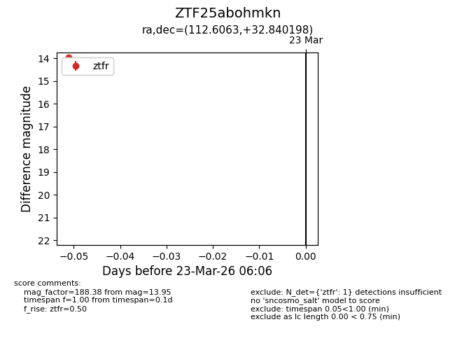
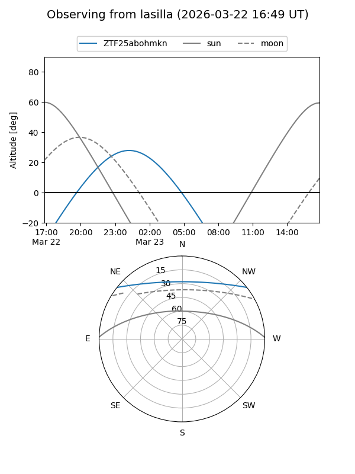
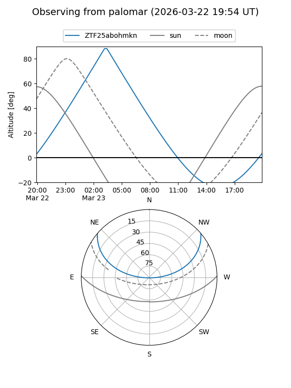

ZTF25abohmkn
Target ZTF25abohmkn at 2026-03-23 06:08
Aliases and brokers:
FINK: link
Lasair: link
ALeRCE: link
alt names
ZTF25abohmkn (ztf,fink_ztf)
Coordinates:
equatorial (ra, dec) = 112.6063,+32.84020
equatorial (HMS+DMS) = 07:30:25.51,+32:50:24.71
galactic (l, b) = (186.1596,+21.95449)
Flags:
Photometry:
last ztfr=13.95
1 ztfr detections
Lightcurve

Visibility


Additional plots